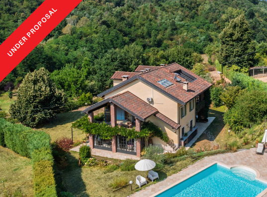

€405.000
Borgata San Giacomo / San Damiano d'Asti, Piedmont
Open the listingOld mixed with new: early-20th-c cascina renovated with preserved vaulted ceilings and staircase, fireplace sitting room, porch and conservatory opening to a built 6×12 saltwater pool. €405k restored-with-pool punches hard under the bargain line. Not the board’s CIP Monferrato set.
Opened 4 Sep 2026. salesPrice €405000. 4 bed / 4 bath / 380 m² / plot 7,500. PV 4.5 kW + rainwater. Independent of isola-asti-cascina, frassinello-barn-pool, monale-vineyard-pool, agliano-cascina.